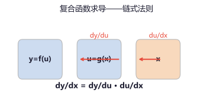
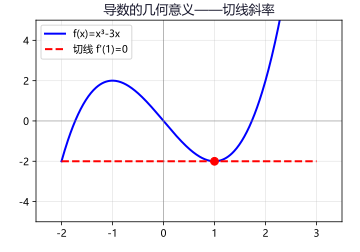
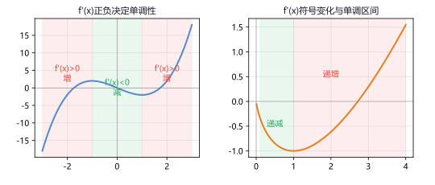
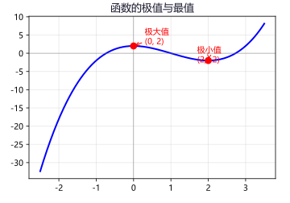
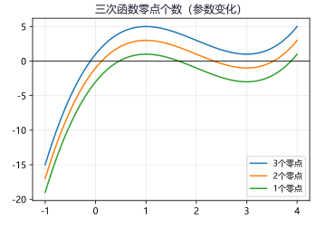
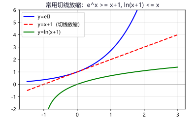

专题一：导数的概念与运算
导数基础
平均变化率与瞬时变化率：函数 f(x) 在 [x₁, x₂] 上的平均变化率为 Δy/Δx = [f(x₂)−f(x₁)]/(x₂−x₁)。当 Δx → 0 时，平均变化率的极限称为函数在 x₀ 处的导数。
导数的定义：f'(x₀) = lim_{Δx→0} [f(x₀+Δx)−f(x₀)]/Δx。
等价形式：f'(x₀) = lim_{x→x₀} [f(x)−f(x₀)]/(x−x₀)。
复合函数求导（链式法则）：对于 y = f(g(x))，令 u = g(x)，则 dy/dx = dy/du · du/dx = f'(u)·g'(x)。
口决：由外到内，逐层求导，相乘即可。

复合函数求导——链式法则：由外到内逐层求导相乘
例 1：求下列函数的导数：① f(x)=x³+2x²−5 ② f(x)=x·sin x ③ f(x)=e²ˣ⁺¹
解：
① f'(x)=3x²+4x
② f'(x)=1·sin x + x·cos x = sin x + x cos x（乘法法则）
③ 令 u=2x+1，y=e^u，则 y'=e^u·u' = e²ˣ⁺¹·2 = 2e²ˣ⁺¹
例 2：f(x)=ln(x²+1)，求 f'(x)。
解：令 u=x²+1，y=ln u。dy/du=1/u，du/dx=2x。
f'(x) = 1/(x²+1)·2x = 2x/(x²+1)。
例 3：f(x)=x/(x²+1)，求 f'(x)。
解：由除法法则：f'(x) = [(1)(x²+1) − x·(2x)]/(x²+1)² = (x²+1−2x²)/(x²+1)² = (1−x²)/(x²+1)²。
• 求导：f(x)=3x⁵−2x³+7x−4 答案：15x⁴−6x²+7
• 求导：f(x)=x·ln x 答案：ln x + 1
• 求导：f(x)=sin(2x+π/3) 答案：2cos(2x+π/3)
专题二：导数的几何意义
切线问题
导数的几何意义：函数 y=f(x) 在 x=x₀ 处的导数 f'(x₀) 就是曲线 y=f(x) 在点 (x₀, f(x₀)) 处的切线斜率。
切线方程：曲线在点 (x₀, y₀) 处的切线方程为 y − y₀ = f'(x₀)(x − x₀)。
两种类型的切线问题：
① 在某点处的切线：该点就是切点，直接求导得斜率。
② 过某点（不在曲线上）的切线：设切点 (x₀, f(x₀))，写出切线方程，代入已知点求出 x₀。

f'(x₀) 即为曲线在 x=x₀ 处的切线斜率
例 1：求曲线 f(x)=x²−3x+2 在点 (1,0) 处的切线方程。
解：f'(x)=2x−3，f'(1)=2−3=−1。
切线方程：y−0 = −1(x−1)，即 y = −x+1。
例 2：求过原点且与曲线 y=ln x 相切的切线方程。
解：设切点为 (x₀, ln x₀)，y'=1/x，切线斜率 k=1/x₀。
切线方程：y−ln x₀ = (1/x₀)(x−x₀)。
代入 (0,0)：−ln x₀ = −1 → ln x₀ = 1 → x₀ = e，k = 1/e。
切线方程：y = x/e。
例 3：若曲线 y=x³+ax 在 x=1 处的切线与直线 y=2x−1 平行，求 a。
解：y'=3x²+a，x=1 时切线斜率为 3+a。
与 y=2x−1 平行 → 斜率相等：3+a=2 → a=−1。
• 求曲线 y=x³−x 在 (1,0) 处的切线方程 答案：y=2x−2
• 求与直线 y=4x−3 平行且与 y=x² 相切的直线方程 答案：y=4x−4（切点(2,4)）
专题三：函数的单调性与导数
单调性
用导数判断单调性：在区间 (a,b) 内，若 f'(x) > 0，则 f(x) 在该区间内单调递增；若 f'(x) < 0，则单调递减；若 f'(x) = 0 恒成立，则 f(x) 是常数函数。
单调区间的求解步骤：
① 确定函数定义域；
② 求导数 f'(x)；
③ 解 f'(x) = 0（驻点），划分区间；
④ 在各区间内判断 f'(x) 的符号 → 确定单调性。
含参数讨论单调性：当导函数中含有参数时，需要对参数进行分类讨论。常见的分类依据包括：二次项系数是否为零、判别式的正负、根的大小比较。

f'(x)>0 → 增函数（红色区域），f'(x)<0 → 减函数（绿色区域）
例 1：求函数 f(x)=x³−3x²+1 的单调区间。
解：定义域：R。f'(x)=3x²−6x=3x(x−2)。
令 f'(x)=0 → x=0 或 x=2。
当 x<0 时，f'(x)>0；02 时，f'(x)>0。
增区间：(−∞,0) 和 (2,+∞)；减区间：(0,2)。
例 2：讨论 f(x)=ax−ln x（a∈R）的单调性。
解：定义域：(0,+∞)。f'(x)=a−1/x = (ax−1)/x。
① 当 a≤0 时，ax−1<0，f'(x)<0，f(x) 在 (0,+∞) 上单调递减。
② 当 a>0 时，令 f'(x)=0 → x=1/a。
x∈(0,1/a) 时 f'(x)<0 递减；x∈(1/a,+∞) 时 f'(x)>0 递增。
a≤0 时递减；a>0 时在 (0,1/a) 递减、在 (1/a,+∞) 递增。
例 3：函数 f(x)=x³−3ax+1 在 R 上单调递增，求 a 的取值范围。
解：f'(x)=3x²−3a。f(x) 在 R 上递增 ↔ f'(x)≥0 恒成立。
即 3x²−3a≥0 → x²≥a 对 ∀x∈R 恒成立。
x² 的最小值为 0，所以 a≤0。∴ a∈(−∞,0]。
• 求 f(x)=ln x − x 的单调区间 答案：增区间(0,1)，减区间(1,+∞)
• 讨论 f(x)=x³−3ax+2 的单调性 答案：a≤0 时整体增；a>0 时有−√a< x <√a减，其余增
专题四：函数的极值与最值
极值最值重点
极值的定义：设 f(x) 在 x₀ 附近有定义，若存在 δ>0，使得对 ∀x∈(x₀−δ, x₀+δ) 有 f(x) ≤ f(x₀)（或 ≥），则称 f(x₀) 为极大值（或极小值），x₀ 为极值点。
极值的判定：
① 必要条件：若 x₀ 是 f(x) 的极值点且 f'(x₀) 存在，则 f'(x₀)=0。（注：f'(x₀)=0 的点称为驻点，驻点不一定是极值点）
② 第一充分条件：f'(x₀)=0 且在 x₀ 附近 f'(x) 左正右负 → 极大值；左负右正 → 极小值；符号不变 → 不是极值。
③ 第二充分条件：f'(x₀)=0 且 f''(x₀)≠0，f''(x₀)<0 → 极大值；f''(x₀)>0 → 极小值。
闭区间上的最值：连续函数在 [a,b] 上的最值只能出现在极值点或端点处。步骤：求 f'(x)=0 的解 → 计算所有极值和端点函数值 → 比较大小。

极大值点两侧导数值由正变负，极小值点两侧导数值由负变正
例 1：求 f(x)=x³−3x²−9x+5 的极值。
解：f'(x)=3x²−6x−9=3(x²−2x−3)=3(x+1)(x−3)。
令 f'(x)=0 → x=−1 或 x=3。
x<−1 时 f'(x)>0，−13 时 f'(x)>0。
∴ x=−1 处取极大值 f(−1)=−1−3+9+5=10；
x=3 处取极小值 f(3)=27−27−27+5=−22。
例 2：求 f(x)=x³−3x 在 [−2,2] 上的最大值和最小值。
解：f'(x)=3x²−3=3(x+1)(x−1)。
令 f'(x)=0 → x=−1 或 x=1（均在 [−2,2] 内）。
计算：f(−2)=−2，f(−1)=2，f(1)=−2，f(2)=2。
最大值 2（在 x=−1 和 x=2 处取得），最小值 −2（在 x=−2 和 x=1 处取得）。
例 3：函数 f(x)=x²+ax+ln x 在 x=½ 处取极值，求 a 并判断是极大还是极小。
解：f'(x)=2x+a+1/x（定义域 x>0）。
f'(½)=1+a+2=0 → a=−3。
f''(x)=2−1/x²，f''(½)=2−4=−2<0。
∴ a=−3，x=½ 处取极大值。
• 求 f(x)=x⁴−4x+1 的极值 答案：x=1 取极小值 −2
• f(x)=x³−3x²+2 在 [−1,3] 上的最值 答案：max=2（x=0），min=−2（x=2）
专题五：导数与函数零点
零点问题压轴
零点存在性：若 f(x) 在 [a,b] 上连续且 f(a)·f(b) < 0，则 ∃c∈(a,b) 使 f(c)=0。
结合单调性可以确定零点的唯一性和个数。
用导数研究零点个数的步骤：
① 求定义域，分析单调区间（极值点）；
② 计算各单调区间端点的函数值（或极限值）的符号；
③ 结合零点存在定理判断每个单调区间内零点的个数。
含参零点问题：通常转化为方程 f(x)=g(a) 在给定区间内有解的问题，利用函数的值域确定参数的取值范围。或直接求极值的符号，讨论极值与 0 的大小关系。

三次函数零点个数随参数变化：上下平移改变零点个数
例 1：证明方程 x³−3x²+1=0 有三个不同的实根。
证：设 f(x)=x³−3x²+1，f'(x)=3x²−6x=3x(x−2)。
令 f'(x)=0 → x=0 或 x=2。
x<0 时 f'(x)>0 ↗，02 时 f'(x)>0 ↗。
f(−∞)→−∞，f(0)=1>0 → (−∞,0)上有1个零点。
f(0)=1>0，f(2)=−3<0 → (0,2)上有1个零点。
f(2)=−3<0，f(+∞)→+∞ → (2,+∞)上有1个零点。
∴ f(x)=0 有三个实根。
例 2：函数 f(x)=x³−3x+a 有三个不同零点，求 a 的取值范围。
解：f(x) 的极值点：f'(x)=3x²−3=0 → x=±1。
极大值 f(−1)=2+a，极小值 f(1)=−2+a。
三个零点 ↔ 极大值>0且极小值<0。
即 2+a>0 且 −2+a<0 → −2
∴ a∈(−2,2)。
例 3：讨论 f(x)=x−asin x 在 R 上的零点个数。
解：f'(x)=1−a cos x。
当 |a|<1 时，f'(x)>0 恒成立，f(x) 单调递增，1个零点。
当 |a|=1 时，f'(x)≥0，个别点取零，仍单调增，1个零点。
当 |a|>1 时，f'(x) 有正有负，f(x) 有多个零点（震荡）。
|a|≤1 时 1 个零点，|a|>1 时无穷多个零点。
• 证明 x³−3x+1=0 恰有一个负根 提示：f(−2)=−1<0，f(0)=1>0，(−∞,0)单调增
• 若 f(x)=x³−6x²+9x+a 恰有两个零点，求 a 答案：a=0 或 a=−4
专题六：导数与不等式证明
不等式压轴
导数证明不等式是高考压轴题的经典题型，核心思路是构造函数，将不等式问题转化为函数最值问题。
方法一：直接构造函数。将待证不等式转化为 F(x)=f(x)−g(x)≥0 的形式，证明 F(x) 的最小值 ≥ 0。
方法二：放缩法。利用以下常用放缩不等式进行放缩：
方法三：分离函数法。对形如 f(x) ≥ g(x) 的不等式，若 f 和 g 的最值容易求得，可分别求 f_min 和 g_max，验证 f_min ≥ g_max。

eˣ ≥ x+1 和 ln(x+1) ≤ x 的几何意义：切线放缩
例 1：证明：eˣ ≥ x+1（x∈R）。
证：设 f(x)=eˣ−x−1，f'(x)=eˣ−1。
令 f'(x)=0 → x=0。
x<0 时 f'(x)<0 ↘；x>0 时 f'(x)>0 ↗。
f(0)=0 为极小值也是最小值。
∴ f(x) ≥ f(0)=0，即 eˣ ≥ x+1。得证。
例 2：证明：x > ln(1+x)（x>0）。
证：设 f(x)=x−ln(1+x)（x>0）。
f'(x)=1−1/(1+x)=x/(1+x)>0（x>0）。
∴ f(x) 在 (0,+∞) 上单调递增，f(x) > f(0)=0。
∴ x > ln(1+x)（x>0）。
例 3：证明：当 x>0 时，ln x ≤ x−1。
证：设 g(x)=ln x − (x−1)=ln x − x + 1（x>0）。
g'(x)=1/x − 1 = (1−x)/x。
00 ↗；x>1 时 g'(x)<0 ↘。
g(1)=0 为最大值。∴ g(x) ≤ 0，即 ln x ≤ x−1。得证。
例 4：已知 f(x)=x ln x，证明：f(x) ≥ −1/e。
证：f'(x)=ln x + 1（x>0）。令 f'(x)=0 → x=1/e。
01/e 时 f'(x)>0 ↗。
f(1/e)=−1/e 为最小值。
∴ x ln x ≥ −1/e。
例 5：对 ∀x>0，证明 eˣ > x²。
证：设 h(x)=eˣ−x²，h'(x)=eˣ−2x。
由 eˣ ≥ x+1 得 h'(x) ≥ x+1−2x=1−x。
当 x<1 时 h'(x)≥1−x>0，但不够严格。利用二阶导：h''(x)=eˣ−2。
xln2 时 h''(x)>0，h'递增。
h'(ln2)=2−2ln2>0，h'(0)=1>0，h'(x)无零点→h'(x)>0恒成立。
∴ h(x)在(0,+∞)递增，h(0)=1>0。∴ eˣ > x²。
• 证明：x−sin x ≥ 0（x≥0）提示：设 f(x)=x−sin x，f'(x)=1−cos x≥0
• 证明：eˣ ≥ ex 提示：f(x)=eˣ−ex，f'(x)=eˣ−e，f(1)=0
• 证明：当 0
专题七：导数综合应用
综合应用
导数综合题考查知识的综合运用，常见问题类型包括：
恒成立问题：对 ∀x∈D，f(x) ≥ 0 恒成立 ↔ f_min(x) ≥ 0。
常用方法：① 直接求最值；② 分离参数（参数与变量分离到两边）；③ 必要性探路（先找必要条件再证明充分性）。
存在性问题：∃x∈D 使 f(x) ≥ 0 ↔ f_max(x) ≥ 0。
与恒成立问题的区别：恒成立取最小值，存在性取最大值。
参数范围问题：通常转化为恒成立或存在性问题的逆问题，先找临界条件，再结合单调性讨论。
导数与数列综合：利用导数构造数列不等式，如结合第 6 专题的放缩不等式进行数列求和放缩。
例 1（恒成立）：对 ∀x>0，x ln x ≥ a(x−1) 恒成立，求 a 的取值范围。
解：转化为 F(x)=x ln x − a(x−1) ≥ 0 恒成立。
F'(x)=ln x + 1 − a。
令 F'(x)=0 → x=e^(a−1)。
0e^(a−1) 时递增。
F_min = F(e^(a−1)) = e^(a−1)(a−1) − a[e^(a−1)−1]
= e^(a−1)(a−1−a) + a = −e^(a−1) + a。
令 F_min ≥ 0 → a ≥ e^(a−1)。由常用放缩 e^x ≥ x+1 知：
e^(a−1) ≥ a（当且仅当 a=1 取等）。所以 a ≥ e^(a−1) 的解为 a=1。
∴ 仅当 a=1 时成立。
例 2（存在性）：若存在 x>0 使 x²−ax+ln x<0，求 a 的取值范围。
解：存在 x>0 使 x²+ln x < ax，即 a > (x²+ln x)/x 有解。
设 g(x)=(x²+ln x)/x = x + (ln x)/x（x>0）。
g'(x)=1 + (1−ln x)/x² = (x²+1−ln x)/x²。
令 h(x)=x²+1−ln x，h'(x)=2x−1/x=0→x=1/√2。
h_min = h(1/√2)=½+1+½ln2 >0 → g'(x)>0恒成立。
g(x)单调递增，g(0⁺)→−∞，g(+∞)→+∞。
∴ a 取任意实数都存在 x 使 a > g(x)。a∈R。
例 3（参数范围+零点）：f(x)=x³−3x²+ax−a 在 R 上单调递增，求 a 的取值范围。
解：f'(x)=3x²−6x+a。f(x) 在 R 上递增 ↔ f'(x) ≥ 0 恒成立。
这是开口向上的二次函数，只需 Δ ≤ 0。
Δ = 36 − 12a ≤ 0 → a ≥ 3。
∴ a∈[3,+∞)。
例 4（综合）：证明：当 x≥0 时，eˣ ≥ ½x² + x + 1。
证：设 f(x)=eˣ−½x²−x−1，f'(x)=eˣ−x−1。
由专题六例 1 知 eˣ ≥ x+1，所以 f'(x) ≥ 0。
∴ f(x) 在 [0,+∞) 上单调递增，f(x) ≥ f(0)=1−0−0−1=0。
∴ eˣ ≥ ½x²+x+1（x≥0）。
• 若 x²−ax+ln x ≥ 0 对 x>0 恒成立，求 a 答案：令 g(x)=x+ln x/x，求最小值... a≤某值
• 证明：eˣ ≥ ¹⁄₆x³ + ½x² + x + 1（x≥0）提示：逐次求导发现规律